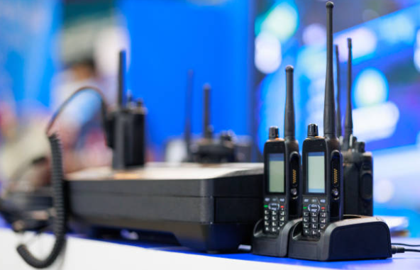

Lider Telsiz Hakkında
Profesyonel telsiz ve interkom kiralama çözümleri sunan Lider Telsiz, farklı ihtiyaçlara uygun iletişim çözümleriyle etkinlik, organizasyon, saha çalışmaları ve ekip iletişimi gibi alanlarda hizmet vermektedir.

Biz Kimiz?
Lider Telsiz, ekiplerin hızlı, düzenli ve kesintisiz iletişim kurabilmesine yardımcı olmak amacıyla telsiz ve interkom kiralama hizmetleri sunmaktadır. İletişimin önemli olduğu projelerde, ihtiyaca uygun ekipmanların belirlenmesi ve kullanım sürecinin daha verimli ilerlemesi için çözüm odaklı bir hizmet anlayışı benimsemektedir.
Farklı çalışma alanlarının farklı iletişim ihtiyaçları bulunabileceği için hizmet yaklaşımımızda önceliğimiz, kullanılacak alanı ve ekip yapısını dikkate alarak uygun iletişim çözümünü oluşturmaktır.
Hizmet Anlayışımız
Telsiz ve interkom çözümlerinde yalnızca ekipman sağlamak yerine, müşterinin kullanım amacını anlamaya ve sürecin mümkün olduğunca pratik ilerlemesine önem veriyoruz. Organizasyon öncesi planlama, ekipman seçimi ve teslim sürecinin düzenli yürütülmesi, hizmet anlayışımızın temel parçalarıdır.
Neden Telsiz ve İnterkom?
Özellikle ekiplerin birbirleriyle hızlı şekilde haberleşmesi gereken ortamlarda telsiz ve interkom sistemleri, iletişimin daha düzenli yürütülmesine yardımcı olabilir. Organizasyonlar, saha ekipleri, etkinlik alanları ve benzeri çalışma ortamlarında ekipler arasındaki iletişim ihtiyacına göre farklı çözümler değerlendirilebilir.
Çözüm Odaklı Yaklaşım
Her projenin ekip sayısı, çalışma alanı ve kullanım süresi farklı olabilir. Bu nedenle hizmet sürecinde ihtiyacı doğru anlamaya, uygun ekipmanı belirlemeye ve müşteriye anlaşılır bir çözüm sunmaya odaklanıyoruz.
Bizimle İletişime Geçin
Telsiz veya interkom kiralama ihtiyacınız varsa, kullanım alanınızı, ekip sayınızı ve ihtiyacınız olan hizmeti bizimle paylaşabilirsiniz. Size uygun çözüm hakkında bilgi almak için Lider Telsiz ile iletişime geçebilirsiniz.